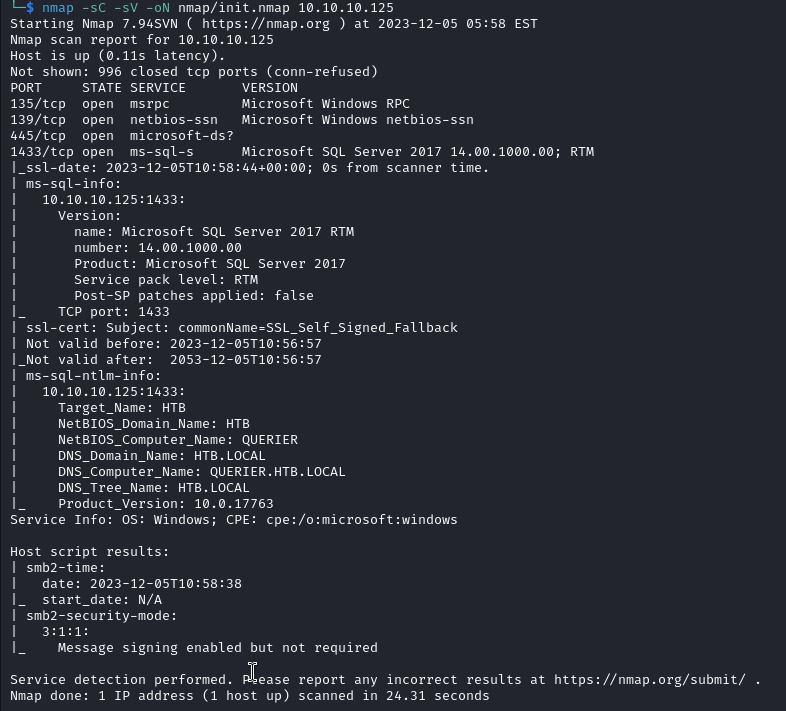
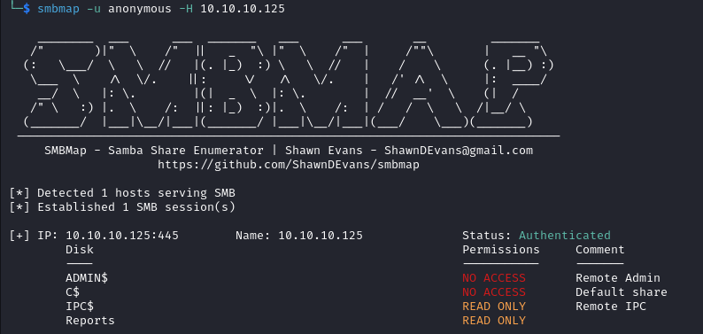
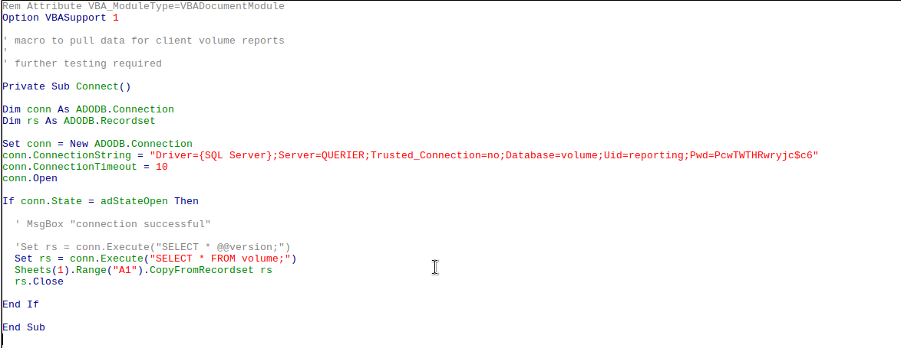

Enumeration
Scan
Starting off with a basic nmap scan:
nmap -sC -sV -oN nmap/init.nmap 10.10.10.125
SMB
Since SMB is open, let's use smbmap to enumerate accessible shares:
smbmap -u anonymous -H 10.10.10.125
Taking a look at the non-default share "Reports", we find a share called "Currency Volume Report.xlsm".
The .xlsm extension signifies a macro enabled Excel document, so let's take a look at the macros in the file:

Plaintext credentials! reporting:PcwTWTHRwryjc$c6